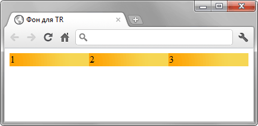
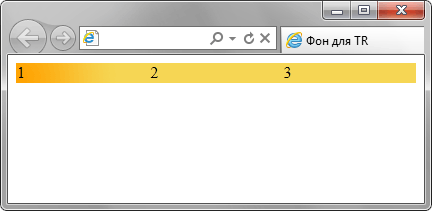

Устанавливает фоновое изображение
для элемента.
Если одновременно для элемента
задан цвет фона,
он будет показан,
пока фоновая картинка
не загрузится полностью.
То же произойдет,
если изображения недоступны
или их показ в браузере отключен.
В случае наличия
в рисунке прозрачных областей,
через них будет проглядывать
фоновый цвет.
В CSS3 допустимо указывать
несколько фоновых изображений,
перечисляя их параметры через запятую.
Пример 1:
<!DOCTYPE html>
<html>
<head>
<meta charset="utf-8">
<title>background-image</title>
<style>
body {
background-image:
url(images/bg.jpg);
background-color:
#c7b39b;
}
</style>
</head>
<body>
<p>...</p>
</body>
</html>

Пример 2:
<!DOCTYPE html>
<html>
<head>
<meta charset="utf-8">
<title>Фон для TR</title>
<style>
table {
width: 100%;
border-spacing: 0;
}
tr {
background:
#f6d654
url(images/orangebg.png)
repeat-y;
}
</style>
</head>
<body>
<table>
<tr>
<td>1</td>
<td>2</td>
<td>3</td>
</tr>
</table>
</body>
</html>

Синтаксис CSS2.1
background-image:
url(путь к файлу)
| none
| inherit
Синтаксис CSS3
background-image:
url(путь к файлу)
| none
[, url(путь к файлу)
| none]*
url() —
задаёт путь к графическому файлу.
Путь к файлу можно писать
как в кавычках
(двойных или одинарных),
так и без них.
none —
отменяет фоновое изображение
для элемента.
inherit —
наследует значение родителя.